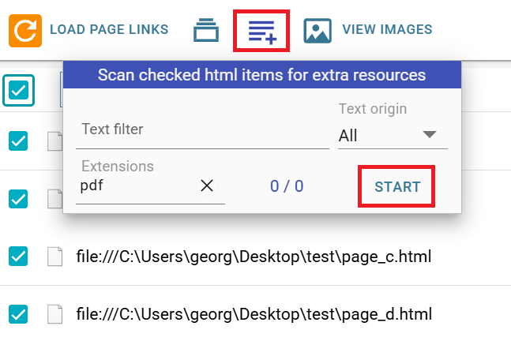
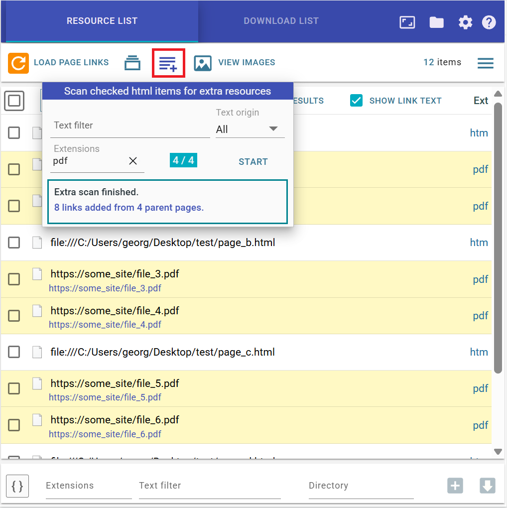
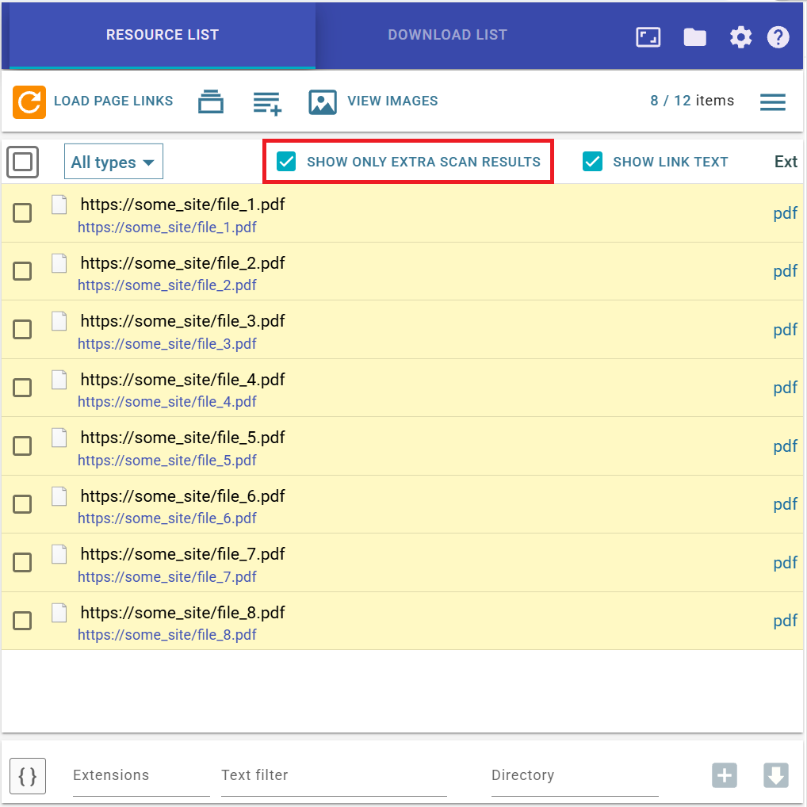

Extra scan feature
Extra scan can extract links from a set of HTML pages. It can be seen as a limited, but still useful, form of web crawling: a one-level-deep crawler.
Step 1
First, load some HTML pages into the Resource List. In this example, the parent HTML pages contain links to
PDF files. The parent pages may also be local .html, .htm, or .txt
files, using the file:/// protocol.
Step 2
Check the items you want to scan, then open the Extra scan dialog using the dedicated button. In this dialog,
you can filter the inner resources using several criteria. In this example, the target files are those with
the pdf extension. At least one criterion is required, to avoid overloading the Resource
List.

Step 3
Press the Start button. The scan starts, and the detected PDF resources are inserted into the
list under their corresponding parent pages.

Step 4
Usually, after the scan finishes, you will want to work only with the items found by Extra scan. To do this,
check Show only extra scan results. You can then continue filtering the list using the normal
Resource List filters.

For generated items, several extra name masks are available:
{pname}, {purl},
{ptitle},
{palt},
{ptext} where
{pname} is the name of the parent item, and so on. You can also use
{purl:n} for parent URL parts.
You can also use the keywords pname, purl, ptext,
ptitle, and palt in the Text filter field. For example,
pname:abc will keep only generated items whose parent item name contains the substring
abc.